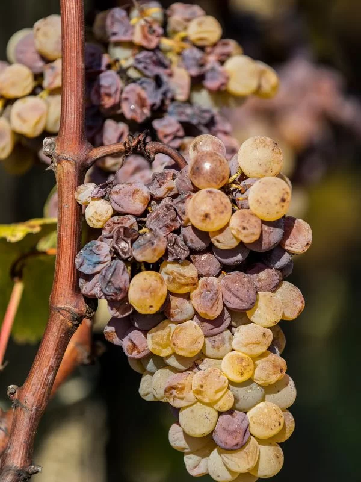
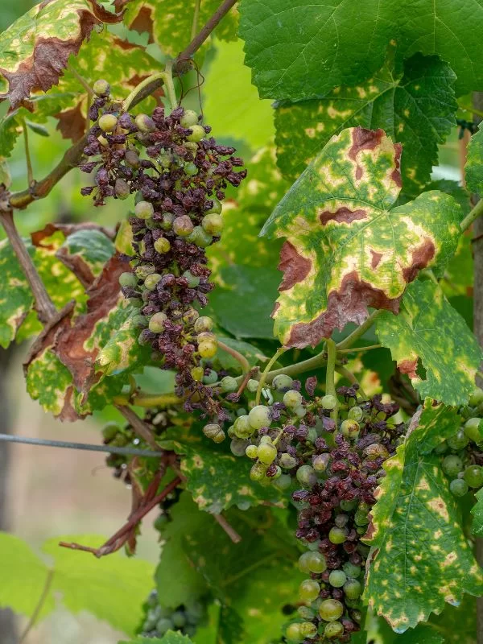
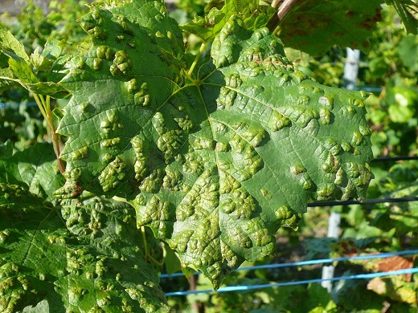
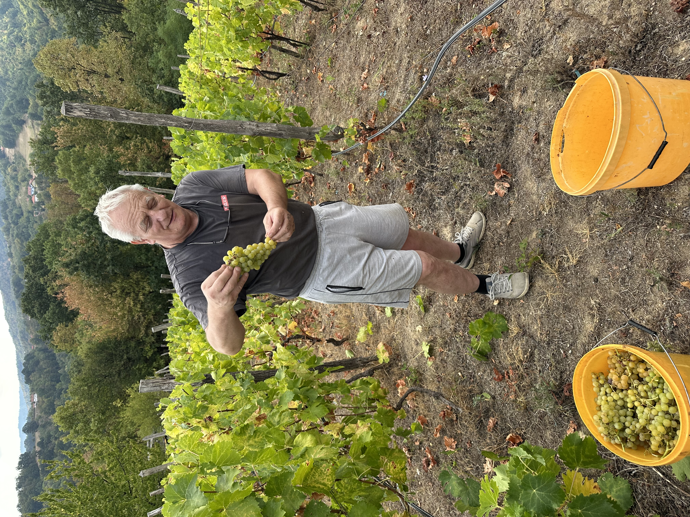

🧮 Kalkulator doza (za prskalicu)
Izračunajte potrebnu količinu preparata na osnovu zapremine vode i propisane doze.
✍️ Dnevnik prskanja
Unos i evidencija svih obavljenih tretmana zaštite u vinogradu.
📅 Kalendar radova
Planirane i preporučene aktivnosti po mesecima u toku godine:

🧺 Dnevnik berbe
Evidencija količine ubranog grožđa, merenja procenata šećera i kiselina.
🦠 Bolesti vinove loze
Izaberite konkretnu bolest iz menija za detalje o simptomima i lečenju.

Pepelnica je jedna od najčešćih bolesti vinove loze koja može značajno uticati na zdravlje i prinos biljke. Ova gljivična infekcija uzrokuje formiranje belog praha na lišću, mladicama i grozdovima vinove loze.
Pepelnica vinove loze uzrokovana je gljivicom iz roda Uncinula necator. Gljiva se razvija u uslovima visoke vlažnosti, ali se može širiti i u sušnim uslovima s niskom vlagom. Optimalna temperatura za razvoj je između 15°C i 25°C.
Prvi znakovi infekcije su beli puderasti premaz koji se formira na površini lišća. Dok bolest napreduje, listovi mogu promeniti boju, postati žuti, a zatim se osušiti i otpasti.

Plamenjača je jedna od najraširenijih bolesti vinove loze, koja može prouzrokovati ozbiljne štete na biljkama i smanjiti prinos grožđa.
Izaziva je gljivica Plasmopara viticola. Gljiva se razvija u vlažnim uslovima, posebno kada je temperatura između 10°C i 30°C.
Na početku se javljaju žute mrlje na lišću, praćene beličastim premazom na donjoj strani lista.

Siva trulež uzrokovana je gljivicom Botrytis cinerea koja može naneti značajne štete grožđu pred berbu.
Na zaraženim grozdovima javlja se sivo-smeđa plesniva prevlaka koja pogađa bobice, čineći ih mekanim i trulim.

Gljivična bolest poznata i pod nazivom crna plesan ili crni rak.
Sitne crne tačkice na površini lišća koje se šire. Na grozdovima bobice postaju meke, trule i gube sok.

Štetočine koje prezimljavaju u pupu i rano u proleće oštećuju mlade izbojke.
Mehuraste izrasline na listu. Tretira se preparatima na bazi sumpora.
🧪 Baza preparata i doziranje
Pregled svih preparata iz programa zaštite, njihova namjena i preporučene doze na 100L vode (za 450–500 trsova):
🖼️ Galerija
Slike vinograda, faza napredovanja loze i radova kroz godine.
📜 Istorija vinograda
Priča o Miloradu Miljanoviću i vinogradu koji je postao porodična tradicija.
Naš otac, Milorad Miljanović, iz ljubavi prema zemlji i iz čistog hobija zasadio je svojih prvih 200 čokota vinove loze. Među prvim zasadima našle su se različite sorte stonog i vinskog grožđa: Smederevka, Italija, Ribijer, Drenjak, Kardinal, Afus Ali i Frankovka.
Zasadio je još oko 1.000 čokota, ovog puta pretežno Frankovke i Belog Burgundca.
Odlučio sam da se ozbiljnije posvetim vinogradu, orezivanju i modernoj zaštiti.
Vinograd je i ono što ostavljamo iza sebe."
👤 Osnivač

Čovjek od kojeg je sve počelo.
Jedan čokot zasadio je iz ljubavi.
Mi danas nastavljamo priču koju je započeo.